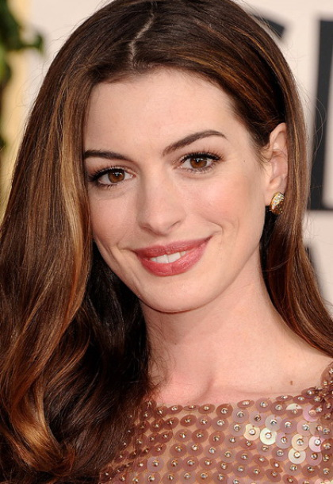
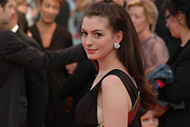
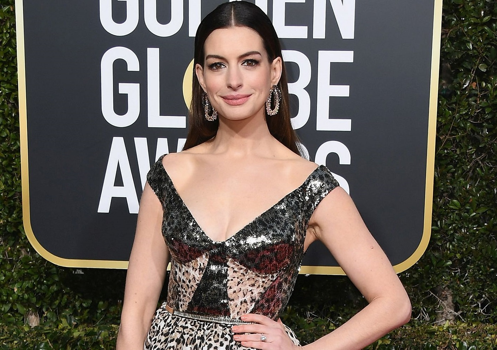

Черный ловелас
Анатомия
ikea
дьявол носит прада
Энн Хэтэуэй
Энн Хэтэуэй
Энн (Э́нни)[3] Жакли́н Хэ́тэуэй (англ. Anne (Annie) Jacqueline Hathaway; род. 12 ноября 1982, Нью-Йорк) — американская актриса и певица. Обладательница премий «Эмми» (2010, за лучшее озвучивание), «Золотой глобус» (2013), Премии Гильдии киноактёров США (2013), BAFTA (2013) и «Оскар» (2013) за лучшую женскую роль второго плана в фильме-мюзикле «Отверженные». Фильмы с её участием заработали 6,8 млрд долларов по всему миру, и она вошла в список Forbes Celebrity 100 в 2009 году.
Хэтэуэй окончила среднюю школу Миллберн в Нью-Джерси, где выступала в нескольких спектаклях. В подростковом возрасте она снялась в телесериале «Будь собой» (англ. Get Real) (1999—2000) и сделала прорыв, сыграв главную героиню в своем дебютном фильме, комедии Disney «Дневники принцессы» (2001). Хэтэуэй сделала переход на роли взрослых с драмами «Крэйзи» и «Горбатая гора» 2005 года. Комедийно-драматический фильм «Дьявол носит Prada» (2006), в котором она сыграла помощника редактора журнала моды, был её самым большим коммерческим успехом на тот момент. Она сыграла выздоравливающую алкоголичку в драме «Рэйчел выходит замуж» (2008), которая получила номинацию на премию «Оскар» за Лучшую женскую роль. Она исполнила роли в коммерчески успешных романтичных фильмах «Война невест» (2009), «День святого Валентина» (2010) и «Любовь и другие лекарства» (2010).
В 2012 году Хэтэуэй снялась в роли Женщины-кошки в своём самом кассовом фильме «Тёмный рыцарь: Возрождение легенды», заключительной картины в трилогии «Тёмный рыцарь». В том же году она сыграла Фантину, проститутку, умирающую от туберкулёза, в музыкальной романтической драме «Отверженные», за которую получила множество наград, в том числе премию «Оскар» за «Лучшую женскую роль второго плана». Затем сыграла учёную в научно-фантастическом фильме «Интерстеллар» (2014), владелицу модного онлайн-сайта в комедийном фильме «Стажёр» (2015), Белую Королеву в «Алиса в Стране чудес» (2010) и «Алиса в Зазеркалье» (2016) и надменную актрису в фильме «Восемь подруг Оушена» (2018).
Биография
Энн Хэтэуэй родилась в Бруклине, Нью-Йорк. Отец Энн, Джералд Хэтэуэй, был адвокатом, а мать, Кейт Маккалей — актрисой. Ее мать имеет ирландские корни, отец ирландские, французские, английские и немецкие. У Энн есть младший брат Томас и старший брат Майкл. Энн назвали в честь жены Шекспира Энн Хэтэуэй. Окончила Millburn High School. В детстве играла в театре.
Впервые Энн появилась на экране в телесериале 1999 года «Будь собой», где вместе с ней дебютировал актёр Джесси Айзенберг, который сыграл младшего брата её героини. В 2001—2003 годах играла в детских фильмах компании Disney, таких как «Дневники принцессы» режиссёра Гарри Маршалла. Маршалл сравнивал Хэтэуэй с Джулией Робертс, Одри Хепбёрн и Джуди Гарленд. Затем несколько семестров Хэтэуэй проучилась в колледже «Вассар».
В 2002 году Хэтэуэй озвучивала роль в анимационном фильме «Возвращение кота» режиссёра Хироюки Мориты. В том же году актриса играет роль Мэделайн Брэй в экранизации романа Чарльза Диккенса «Николас Никлби» режиссёра Дугласа МакГрета.
В 2004 году Хэтэуэй снялась в картине «Заколдованная Элла» режиссёра Томми О’Хейвера и в сиквеле «Дневники принцессы 2: Как стать королевой». Ей предлагали роль в картине «Призрак Оперы», но из-за недостатка времени она отказалась. Затем она озвучила роль в мультфильме «Правдивая история Красной Шапки» (2005).
В 2005 году Хэтэуэй снялась в молодёжной драме «Крэйзи» и в награждённом тремя «Оскарами» фильме «Горбатая гора» Энга Ли, сыграв роль жены ковбоя-бисексуала. В фильме «Дьявол носит Prada» (2006) Хэтэуэй сыграла роль ассистента главного редактора журнала мод.
В 2007 году вышел фильм «Джейн Остин», где она сыграла роль знаменитой английской писательницы. Хэтэуэй отказалась от участия в съёмках комедии Джадда Апатоу «Немножко беременна». В 2009 году Хэтэуэй была номинирована на премии «Оскар» и «Золотой глобус» за роль в картине «Рэйчел выходит замуж».
В 2009 году была названа самой лучшей молодой актрисой по версии LoveFilm. В 2010 году снялась в фильме «Алиса в Стране Чудес» в роли Белой Королевы. В 2011 году сыграла главную роль в мелодраме Лоне Шерфига «Один день», релиз которого состоялся 18 августа 2011 года.
27 февраля 2011 года Энн Хэтэуэй совместно с Джеймсом Франко была ведущей 83-й церемонии «Оскар».
В 2012 году снялась в роли Селины Кайл / Женщины-кошки в продолжении истории о Бэтмене «Тёмный рыцарь: Возрождение легенды». Эта роль была для неё наиболее тяжёлой в плане физической подготовки.
За этим фильмом последовала экранизация мюзикла по роману Виктора Гюго «Отверженные», где Хэтэуэй исполнила роль Фантины — матери Козетты, принёсшей ей почти все ключевые призы «сезона наград», включая «Золотой глобус», BAFTA, премию Гильдии киноактёров США, «Выбор критиков» и «Оскар».
Хэтэуэй приняла участие в съёмках фильма Кристофера Нолана «Интерстеллар» вместе с Мэттью Макконахи и Джессикой Честейн. Научно-фантастический фильм о теории относительности и теориях кротовых нор, которые выдвигали такие учёные как Альберт Эйнштейн, Стивен Хокинг и Кип Торн, был выпущен на экраны США и Канады 5 ноября 2014 года.
24 января 2019 года в российский прокат вышел триллер Стивена Найта «Море соблазна» с Энн Хэтэуэй в главной женской роли. Компанию на съёмочной площадке Энн составили Мэттью Макконахи (с которым она совсем недавно играла вместе в «Интерстелларе»), а также Джейсон Кларк и Дайан Лейн.
Личная жизнь
Хэтэуэй почти 4 года встречалась с итальянским бизнесменом Рафаэлло Фольери[en], обвинённым в расхищении 50 миллионов долларов, пожертвованных миллиардером Рональдом Бёрклом[en] в фонд помощи католическим церквям. Хэтэуэй являлась соучредителем этого и некоторых других фондов. Личные дневники актрисы были приобщены к делу в качестве доказательства обвинения, однако самой актрисе обвинения не были предъявлены.
Вскоре после разрыва с Рафаэлло Фольери Хэтэуэй начала встречаться с актёром и дизайнером ювелирных украшений Адамом Шульманом. В ноябре 2011 года пара объявила о помолвке[9]. 29 сентября 2012 года они поженились в частном поместье маленького городка Биг-Сур, Калифорния. 24 марта 2016 года у пары родился сын Джонатан Роузбэнкс. В ноябре 2019 года родился второй сын — Джек.
14 января 2021 года в The Tonight Show с Джимми Фэллоном Хэтэуэй заявила, что ей не нравится, когда люди называют её по имени — Энн. Так называла её мама, когда та злилась на свою дочь. Поэтому предпочтительным для неё будет имя Энни (англ. Annie).
Общественная деятельность
В июле 2006 года Хэтэуэй провела неделю в Никарагуа, помогая вакцинировать детей от гепатита А. Она также побывала в других странах, чтобы следить за соблюдением прав женщин и девочек, включая Кению и Эфиопию.
В 2008 году она была удостоена награды Elle’s Women in Hollywood за свою благотворительную деятельность.
В 2010 году Хэтэуэй объявила о сотрудничестве со Всемирным банком в рамках двухлетней программы развития «The Girl Effect», миссия которой заключается в расширении прав и возможностей девочек в развивающихся и развитых странах, где треть молодых женщин не работают и не учатся.
В 2022 году после российского вторжения поддержала Украину и сделала пожертвования в фонды «Красного Креста Украины», UNICEF и Save the Children.


